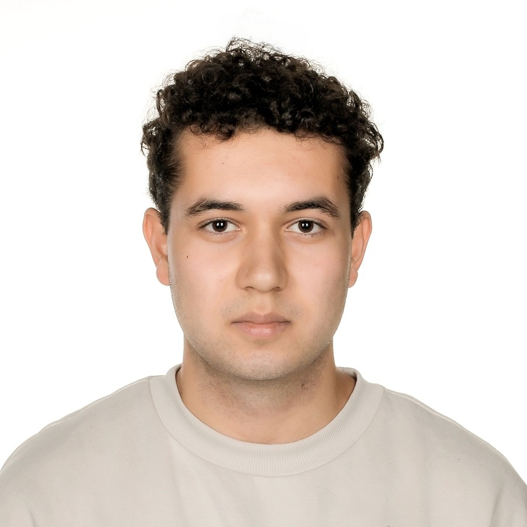
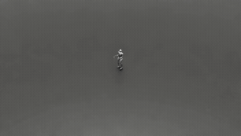
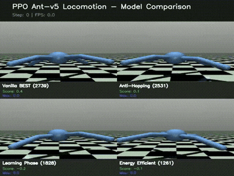
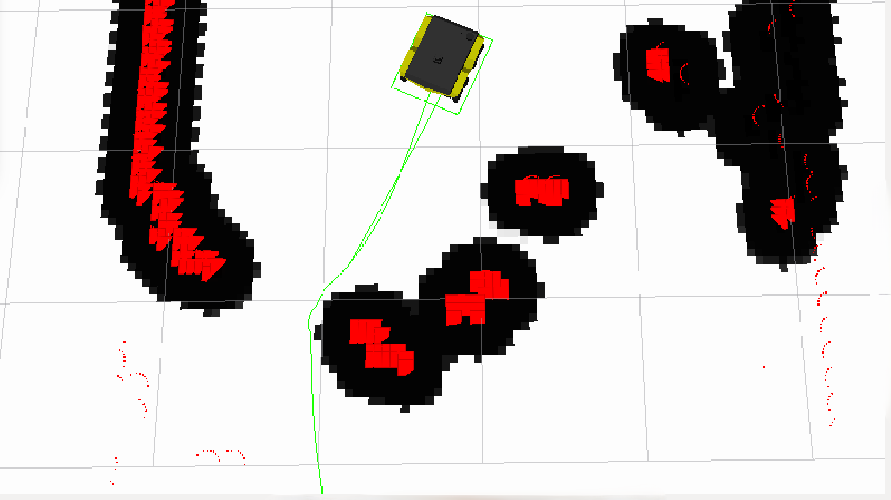
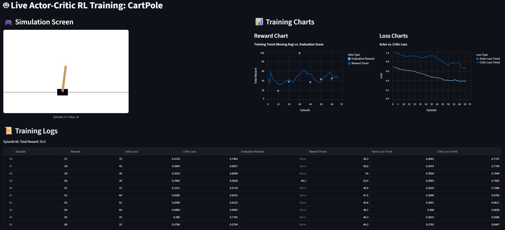
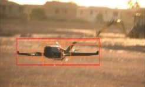
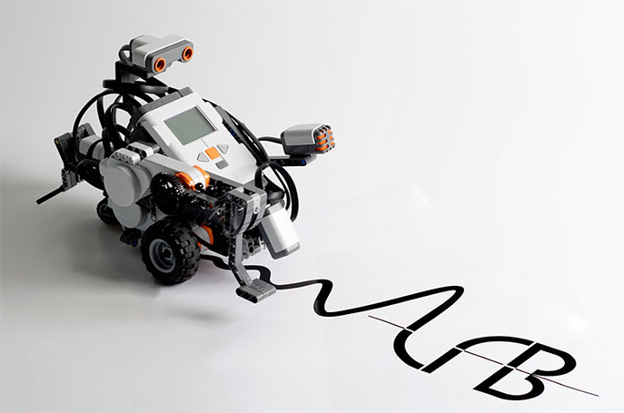

Mehmet Turan Yardimci
I work on reinforcement learning fine tuning of vision language action policies, and on hierarchical control for humanoid robots. Most of it runs on a single consumer GPU, which is a constraint I treat as part of the problem rather than an excuse: if a method only works on a cluster, very few people can check it. Platforms are the Unitree G1 and a UR5e arm, in NVIDIA Isaac Lab and LeRobot.
Download CV Europass format, last updated July 2026Critic Architecture Matters: Dual vs. Unified Critics for Humanoid Loco-Manipulation
The paper isolates one design choice in multi objective reinforcement learning: whether a humanoid policy should share a single critic across locomotion and manipulation, or use separate critics with disjoint reward signals. Three policies on a 23 degree of freedom Unitree G1 in Isaac Lab, same observations, same curriculum, same hardware, with only the critic architecture varied. A secondary result is that once the architecture is fixed, adding anti gaming reward machinery buys nothing further.
smolvla_flow_rl
Online reinforcement learning fine tuning of a flow matching vision language action policy, on a single 12GB consumer GPU. Open source, Apache 2.0.

- Stochastic sampler for flow matching policies, leaving the pretrained action head untouched.
- Policy gradient update that grades the action the environment actually executed, over the executed part of the chunk only.
- Critic head with adaptive target rescaling, kept outside the action head.
- Parameter manifest and learning rate proof printed before the first update, so what is training and at what rate is a logged fact rather than an assumption.
- Process isolated simulator harness with a sparse terminal reward and no shaping.
- Deterministic evaluation with a completeness gate that refuses to produce a number from an unfinished evaluation.
- Verification protocol whose mechanical subset runs from a single gate entry point.
Research Interests
Isaac G1 Humanoid VLM-RL Loco-Manipulation
Hierarchical reinforcement learning for the Unitree G1 humanoid: whole body control with vision language model task planning on top.

- Triple actor critic architecture: separate policies for locomotion (legs and waist), arm reaching (shoulders, elbows, wrists), and hand control (DEX3 three finger hands)
- Dual actor critic loco manipulation: decoupled locomotion and arm policies trained sequentially with curriculum learning, for coordinated walking and reaching
- Anti gaming mechanisms: absolute target sampling, three condition reach validation, movement centric rewards, so the curriculum cannot be exploited by a policy that stands still
- 29 DoF whole body model: 12 leg, 3 waist, 8 arm and 6 wrist joints, with 14 DEX3 finger joints for grasping
- VLM planning layer: Qwen3-VL running locally through Ollama turns a natural language instruction into a skill sequence, with replanning from updated world state
- Goal task: squat, pick an object off the ground, stand, walk to a table, place it in a box
Projects
G1 Unitree Locomotion Control (ULC)
Multi stage PPO pipeline for Unitree G1 whole body locomotion: flat walking, velocity tracking, terrain adaptation, torso stabilization and arm coordination, across a five stage curriculum. This is the codebase behind the ICRA workshop paper above.
View on GitHub →
G1 Vision Language Action pipeline
An RL to IL to VLA pipeline for the G1: expert demonstrations collected from trained RL policies, converted to a LeRobot dataset, then distilled into end to end visuomotor policies with ACT, Diffusion Policy and GR00T N1.6. In progress, repository not public yet.
Go2 VLM-RL Navigation
Language conditioned quadruped navigation on the Unitree Go2, combining a vision language model with reinforcement learning for instruction following and problem solving in Isaac Lab.
View on GitHub →

Isaac Lab Anymal-C Quadruped Locomotion
PPO implemented from scratch for the ANYmal-C quadruped, reaching 17,000 or more steps per second on an RTX 5070 Ti with domain randomization and reward shaping across 4,096 parallel environments.
View on GitHub →

MuJoCo Ant-v5 PPO from Scratch
PPO and SAC written with NumPy and PyTorch alone for MuJoCo Ant-v5, past 2,700 reward by shaping away the hopping gait the default reward rewards. Sixteen parallel environments, GAE, observation normalization and learning rate annealing.
View on GitHub →

BARN Benchmark: Local Path Planners
A comparative benchmark of TEB, DWA, MPC and Lattice local planners on the BARN navigation dataset in ROS and Gazebo, and the subject of my undergraduate thesis. The paper is under review.
View on GitHub →

Live Actor-Critic Training (CartPole)
An interactive Streamlit application that trains an actor critic agent in the browser while you change its hyperparameters, built to make the learning dynamics visible rather than described.
View on GitHub →

YOLO Fixed Wing UAV Detection
Real time detection for autonomous fixed wing UAV operations, running on a Jetson Nano alongside a Pixhawk flight controller, built and flown for TEKNOFEST competitions.
View on GitHub →

PID Control with NXT Robot
A PID controller on LEGO Mindstorms NXT hardware in NXC, with real time sensor feedback closing the loop on motor control. The first control system I tuned by hand rather than by reading about it.
View on GitHub →
Publications
Education
M.Sc. in Computer Science
- Incoming student. Intended focus: robot learning, reinforcement learning and vision language action models
B.Sc. in Computer Engineering (English)
- Honor student, Fall 2023 to 2024. High honor student, Fall 2024 to 2025
- Thesis: Benchmarking Local Path Planners in ROS using the BARN Dataset
- Coursework in artificial intelligence, pattern recognition, optimal control, reinforcement learning, robotics and human computer interaction
Erasmus+ Exchange, Computer Science (English)
- GPA 4.9 out of 5.0
- Robotics and automation, PID control, sensor integration, robot programming, computer graphics
Experience
Computer Engineering Intern
- In house software development with .NET and C#
Computer Engineering Intern
- Algorithmic solutions for production side software, with .NET and C#
- Software architecture, debugging and interface design
Team Leader, then Software Manager
- Led a team of more than ten people building autonomous fixed wing UAV systems
- TUBITAK and TEKNOFEST competition projects across three years
- Vision based autonomy on embedded hardware: YOLO detection on a Jetson Nano, Pixhawk flight control, PID tuning